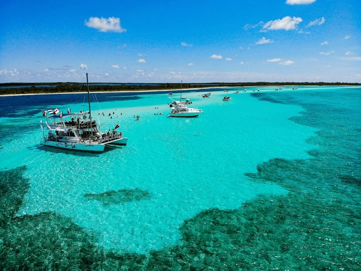
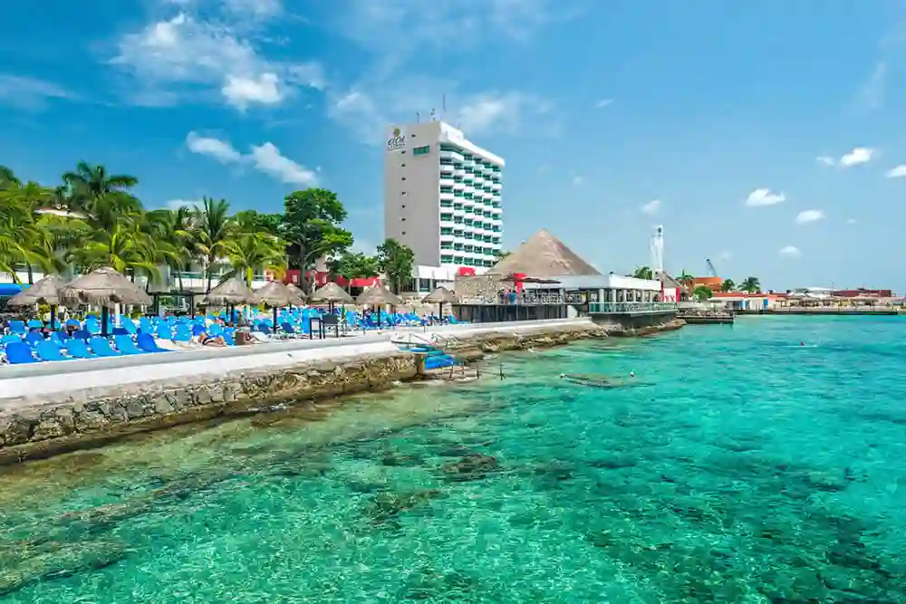

Cozumel, a Caribbean island located off the eastern coast of the Yucatán Peninsula in Mexico, is an iconic tourist destination known for its stunning coral reefs, white sandy beaches, and vibrant marine life. With a rich history and vibrant culture, Cozumel attracts visitors from around the world with its unique blend of natural beauty, outdoor activities, underwater adventures, and local charm.
Punta Sur Eco Beach Park:
Punta Sur Eco Beach Park is a breathtaking natural reserve situated on the southern tip of Cozumel. It features pristine beaches, lush mangroves, and a mesmerizing lighthouse offering panoramic views of the Caribbean Sea. Visitors can also discover diverse wildlife, including crocodiles and exotic birds.
The island of Cozumel offers a wide range of activities for all tastes and ages. Diving and snorkeling enthusiasts are amazed by the breathtaking coral reefs, such as the famous Cozumel Reef National Park, which harbors an unparalleled diversity of marine life, including tropical fish, sea turtles, and colorful corals. In addition to water activities, visitors can explore Mayan archaeological sites, such as San Gervasio, or relax on beautiful beaches like Palancar. Beach and Chankanaab Beach.
San Gervasio Mayan Archaeological Site:
San Gervasio is an ancient Mayan archaeological site located in the heart of Cozumel. This historical site was once a significant center of worship for the Mayan goddess Ixchel. Visitors can explore the ruins of temples, altars, and ceremonial structures while learning about Mayan culture and history.
in Cozumel unfolds at a tranquil and relaxed pace, with a charming mix of Mexican and Caribbean influences. Visitors can enjoy local hospitality in quaint towns, sample delicious Mexican cuisine at waterfront restaurants, and discover unique crafts at local markets. Additionally, the island offers a variety of entertainment options, from thrilling jeep tours to leisurely bike rides along the coast.
Chankanaab Beach Adventure Park:
Chankanaab Beach Adventure Park is a popular destination known for its stunning beach, vibrant coral reefs, and diverse marine life. Visitors can enjoy snorkeling, diving, swimming with dolphins, and exploring botanical gardens. It's an ideal spot for nature lovers and adventure seekers alike.

With its breathtaking natural beauty, rich history, and welcoming atmosphere, Cozumel is a dream destination for those seeking to escape the daily routine and immerse themselves in the wonderful blend of culture, adventure, and relaxation that this gem of the Mexican Caribbean offers.
Cozumel Museum (Museo de la Isla de Cozumel):
The Cozumel Museum, also known as Museo de la Isla de Cozumel, showcases the rich history, culture, and biodiversity of Cozumel. Exhibits include artifacts from ancient Mayan civilizations, marine life displays, and artwork by local artists. It's an educational and immersive experience for tourists interested in the island's heritage.
.webp)